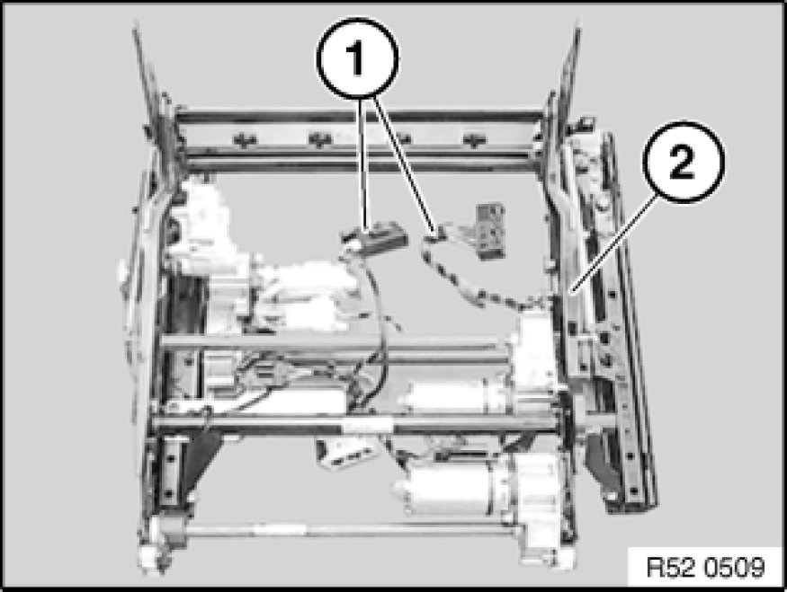
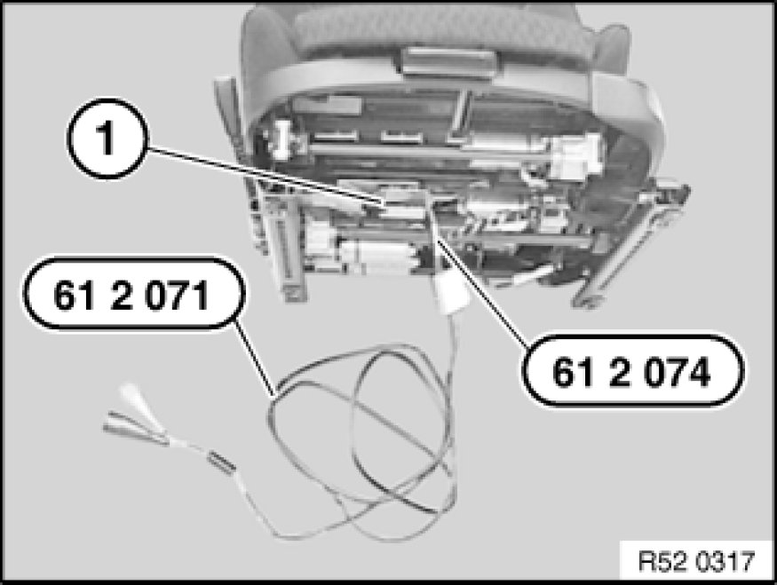

Removing and Installing/Replacing Left or Right Seat Mechanism (On Sports/Electric Front Seat)
52 16 025 - Removing and installing/replacing left or right seat mechanism (on sport/electric front seat)
Remove seat pan and flexmat on front seat,
refer to 52 16 ... Removing and Installing/Replacing Seat Pan and Flex Mat on Front Left or Right Seat (Sports/Electric)
Remove backrest frame on front seat,
refer to 52 13 030.
Remove seatbelt tensioner,
refer to 72 11 030.

Disconnect all plug connections (1) from actuator drives.
Remove seat wiring harness from seat mechanism (2).

Installation:
Perform function check:
Connect cable 61 2 071 to battery,
connect cable 61 2 074 to cable 61 2 071 and plug connection (1) to front seat.